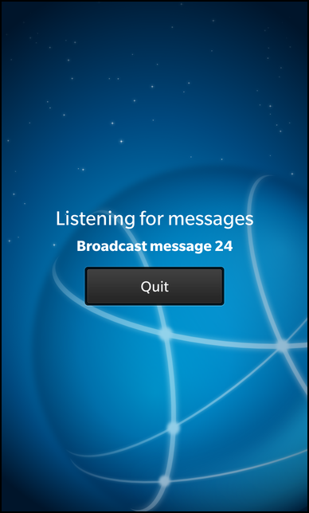

Files:
The Broadcast Receiever example shows how to receive information that is broadcasted over a local network.

In this example we'll learn how to use the QUdpSocket class to send and receive broadcast messages on the network.
The example application is splitted in two executables, broadcastsender and broadcastreceiver. While the broadcastsender allows the user to start the broadcasting of messages on the local network, the broadcastreceiver will listen on the local network for these messages and display the received ones in the UI.
The central class in broadcastreceiver is Receiver, which encapsulates the retrieval of the broadcasted messages and provides a property to display the content of the received datagrams in the UI.
// A standard Label Label { id: message horizontalAlignment: HorizontalAlignment.Center text: _receiver.status textStyle { color: Color.White base: tsd.style fontWeight: FontWeight.Bold } // Scale the label size on incoming data animations: [ SequentialAnimation { id: animTextSize ScaleTransition { toX: 1.4 toY: 1.4 duration: 300 } ScaleTransition { toX: 1.0 toY: 1.0 duration: 300 } } ] // Play animation on changing text onTextChanged: animTextSize.play() }
The 'status' property of the exported Receiver object is bound against the 'text' property of a Label control, so that whenever a new datagram arrives, the text is updated automatically on screen. Like in the broadcastsender, the size of that label is animated here as well whenever its content changes.
Receiver::Receiver(QObject *parent) : QObject(parent) { /** * Initialize the 'status' property with no data, it won't * be shown in the UI until the first datagram arrives. */ m_status = "--"; // Create a new UDP socket and bind it against port 45454 m_udpSocket = new QUdpSocket(this); m_udpSocket->bind(45454, QUdpSocket::ShareAddress); /** * Create signal/slot connection to invoke processPendingDatagrams() whenever * a new datagram is received by the socket. */ connect(m_udpSocket, SIGNAL(readyRead()), this, SLOT(processPendingDatagrams())); }
Inside the constructor of the Receiver class, we initialize the 'status' property and create the QUdpSocket object that encapsulates the low-level network communication. By calling bind() we let the socket listen on port 45454 for incoming broadcast messages. In the next step we connect the readyRead() signal of the socket, which is emitted whenever a new datagram arrived, against our own slot processPendingDatagrams().
void Receiver::processPendingDatagrams() { // Now read all available datagrams from the socket while (m_udpSocket->hasPendingDatagrams()) { // Create a temporary buffer ... QByteArray datagram; // ... with the size of the received datagram ... datagram.resize(m_udpSocket->pendingDatagramSize()); // ... and copy over the received datagram into that buffer. m_udpSocket->readDatagram(datagram.data(), datagram.size()); // Update the 'status' property with the content of the received datagram m_status = tr("%1").arg(datagram.data()); emit statusChanged(); } }
In processPendingDatagrams() we check whether the socket still has pending datagrams and if that's the case, we read the next datagram from the socket and store its content in the 'status' property. By emitting the 'statusChanged()' signal, we trigger the reevaluation of all property bindings in the UI where 'status' is used.